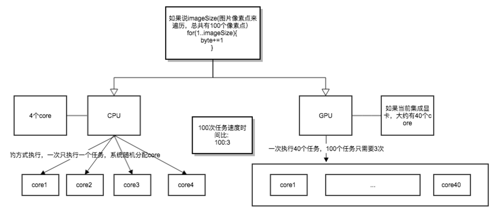
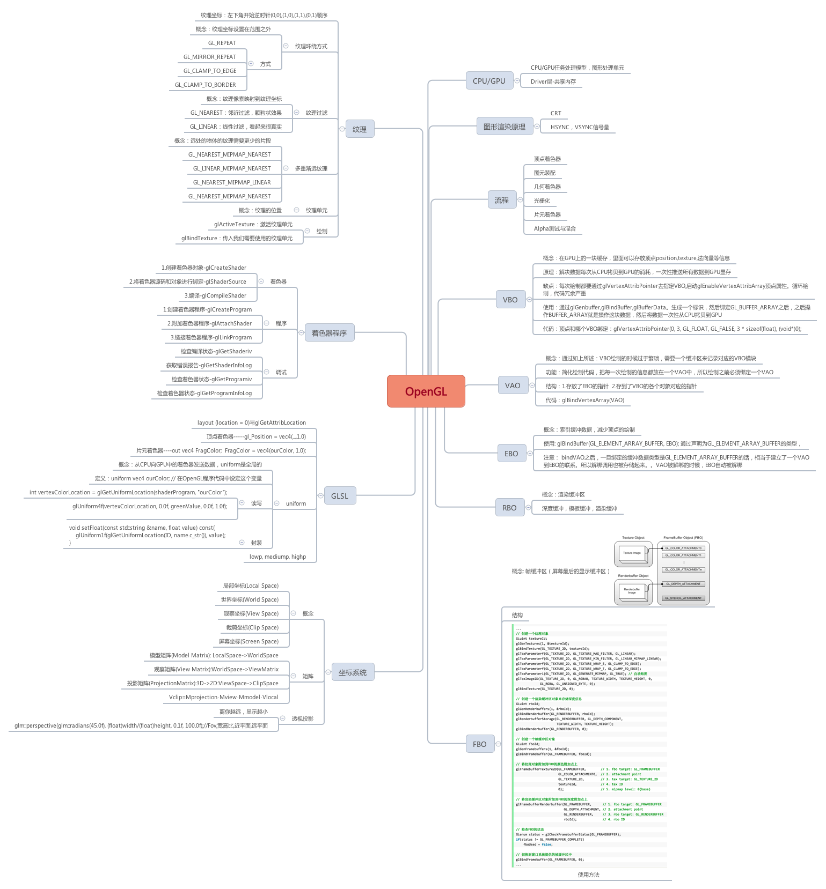
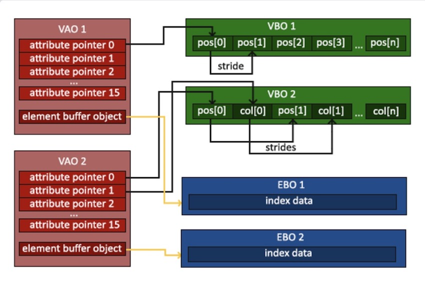

OpenGLES基础篇
前言
学习OpenGL网上资料很多，但是这里着重推荐 learnopengl-cn, 这个网站带领我们从零开始学习，每一步都非常详细。就是环境配置稍微有点麻烦。鉴于如此，我将其第一章的部分代码转换成了OpenGLES版，在手机上直接跑。方便大家阅读。这里我会抽出learnopengl的核心部分进行讲解。如果大家不嫌麻烦我这边也有教程教大家在Mac上搭建环境,Mac+OpenGL环境搭建
一. 概念
这里虽然是讲的概念，但是这边把概念按类型不同做了区分。
请大家先一个个对着表格耐心先看完，先看一遍。然后后续会对这些有一个讲解。
1. 基础
| 基础 | 概念 |
|---|---|
| CPU | CPU的结构大概是,20%运算(Compute)单元,80%逻辑(Logic)单元 |
| GPU | 100%运算单元 |

2. 图形渲染管线
| 图形渲染管线 | 概念 |
|---|---|
| 顶点着色器 | 它把一个单独的顶点作为输入 |
| 图元装配 | 将顶点着色器输出的所有顶点作为输入,并所有的点装配成指定图元的形状,比如三角形 |
| 几何着色器 | 几何着色器把图元形式的一系列顶点的集合作为输入，它可以通过产生新顶点构造出新的图元来生成其他形状 |
| 光栅化 | 把图元映射为最终屏幕上相应的像素，生成供片段着色器(Fragment Shader)使用的片段(Fragment)。 在片段着色器运行之前会执行裁切(Clipping),裁切会丢弃超出你的视图以外的所有像素，用来提升执行效率 |
| 片元着色器 | 是计算一个像素的最终颜色，这也是所有OpenGL高级效果产生的地方。 通常，片段着色器包含3D场景的数据（比如光照、阴影、光的颜色等等），这些数据可以被用来计算最终像素的颜色 |
| Alpha测试与混合 | 这个阶段检测片段的对应的深度,用它们来判断这个像素是其它物体的前面还是后面，决定是否应该丢弃。 这个阶段也会检查alpha值（alpha值定义了一个物体的透明度）并对物体进行混合(Blend) |
3. 对象
| 对象 | 概念 |
|---|---|
| VBO | 顶点数组对象 |
| VAO | 顶点缓冲对象 |
| EBO | 索引缓冲对象 |
| RBO | 渲染缓冲对象(Renderbuffer Object),一个可用的帧缓冲附件类型,渲染缓冲对象是一个真正的缓冲，即一系列的字节、整数、像素等，渲染缓冲对象附加的好处是，它会将数据储存为OpenGL原生的渲染格式，它是为离屏渲染到帧缓冲优化过的 |
| FBO | 用于写入颜色值的颜色缓冲、用于写入深度信息的深度缓冲和允许我们根据一些条件丢弃特定片段的模板缓冲。这些缓冲结合起来叫做帧缓冲 |
4. 纹理
| 纹理 | 概念 |
|---|---|
| 纹理 | 物体表面的图案 |
| 纹理环绕方式 | 纹理坐标的范围通常是从(0, 0)到(1, 1)，那如果我们把纹理坐标设置在范围之外的循环,分为GL_REPEAT, GL_MIRRORED_REPEAT, GL_CLAMP_TO_EDGE, GL_CLAMP_TO_BORDER |
| 纹理过滤（Texture Filtering） | 分辨率很低的时候，我们把纹理像素映射到纹理坐标。分为邻近过滤(Nearest Neighbor Filtering)和线性过滤((Bi)linear Filtering) |
| 多重渐远纹理 | 它简单来说就是一系列的纹理图像，后一个纹理图像是前一个的二分之一。多级渐远纹理背后的理念很简单：距观察者的距离超过一定的阈值，OpenGL会使用不同的多级渐远纹理，即最适合物体的距离的那个 |
| 纹理单元 | OpenGL至少保证有16个纹理单元供你使用，也就是说你可以激活从GL_TEXTURE0到GL_TEXTRUE15。它们都是按顺序定义的，所以我们也可以通过GL_TEXTURE0 + 8的方式获得GL_TEXTURE8，这在当我们需要循环一些纹理单元的时候会很有用 |
4.坐标系统
| 坐标系统 | 概念 |
|---|---|
| 局部空间(Local Space) | 局部坐标是对象相对于局部原点的坐标，也是物体起始的坐标 |
| 世界空间(World Space) | 世界空间坐标是处于一个更大的空间范围的。这些坐标相对于世界的全局原点，它们会和其它物体一起相对于世界的原点进行摆放 |
| 观察空间(View Space) | 每个坐标都是从摄像机或者说观察者的角度进行观察的 |
| 裁剪空间(Clip Space) | 裁剪坐标会被处理至-1.0到1.0的范围内，并判断哪些顶点将会出现在屏幕上 |
| 屏幕空间(Screen Space) | 视口变换(Viewport Transform)的过程。视口变换将位于-1.0到1.0范围的坐标变换到由glViewport函数所定义的坐标范围内。最后变换出来的坐标将会送到光栅器，将其转化为片段 |
5. 摄像机
| 摄像机 | 概念 |
|---|---|
| LookAt矩阵 | |
| 欧拉角 | 被定义为偏航角(Yaw)，俯仰角(Pitch)，和滚转角(Roll)从而允许我们通过这三个值构造任何3D方向 |
二. 理解
上述讲了一大堆概念，这里给大家说一下自己的一些理解以及对一点难解的地方做一下说明
1. 脑图总结

2. VAO/VBO/EBO到底是什么？

1. VBO
VBO是一个顶点缓冲数组，记录顶点的属性而存在，比如颜色，位置，纹理坐标等属性。它的存在是想将显示列表的特性（绘制时不传输数据，快）和顶点数组的特性（数据打包传输，修改灵活）结合起来。以前没有VBO的时候，每次绘制都要用过glVertexPointer进行一次数据传递，将CPU数据拷贝到GPU。有了VBO之后，只需要一次传递即可。
造成的问题
如果要绘制两个三角形。那么将glBindBuffer()-glEnableVertexAttribArray()-glVertexAttribPointer-glDrawArray()进行重复。
2. VAO
针对上面的问题。VAO就诞生了。VAO是用来简化绘制代码。现在代码变成了如下所示
1 | // 初始化 |
注意
VAO不是 buffer-object，所以不作数据存储，VAO里面存了一个EBO的指针以及一个顶点属性数组。结构如下.
1 | struct VertexAttribute |
3. EBO
1 | float vertices[] = { |
有几个顶点叠加了。我们指定了右下角和左上角两次！一个矩形只有4个而不是6个顶点，这样就产生50%的额外开销.这里我们解决方式是通过索引绘制
1 | float vertices[] = { |
4. 结论
VBO是为了均衡数据的传输效率与灵活修改性；VAO的本质是储存绘制状态，简化绘制代码
三. 实战
这里用了VAO，VBO，EBO，demo在最后的地址中可以下载
1 | GLfloat vertices[] = { |
四. OpenGLES上需要注意的几点
1. 纹理过滤设置错误导致黑屏
OpenglES中一定要注意，GL_CLAMP_TO_EDGE,否则就是黑屏
1 | //set the texture wrapping parameters |
2. 减少drawArray
GPUImageView中会有多次drawArray的问题，播放上屏建议自己做